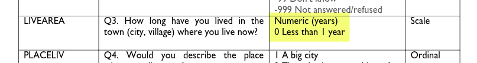

## Download and process NILT 2012 survey
# Date: [add today's date here]
# Author: [add your name here]Data wrangling
Welcome to Lab 3!
In our previous session we learned about R packages, including how to install and load them. We talked about the main types of data used in social science research and how to represent them in R. We also played around with some datasets using some key functions, such as: filter(), select(), and mutate(). In this session, we will build of these principles and learn how to import data in R, clean and format the data using a real-world dataset. This is a common and important phase in quantitative research.
Overview
By the end of this lab you will know how to:
- set up an RStudio project file from scratch
- create an R script to download, wrangle, and save a dataset
- load a saved dataset within an R Markdown file
- work with the dataset used in the formative and summative assessments
The NILT Documentation
Today, we will be working with data generated by the Access Research Knowledge (ARK) hub. ARK conducts a series of surveys about society and life in Northern Ireland. For this lab, we will be working with the results of the Northern Ireland Life and Times Survey (NILT) in the year 2012. In particular, we will be using a teaching dataset that focuses on community relations and political attitudes. This includes background information of the participants and their household.
Please take 5-10 minutes to read the documentation for the dataset. Such documentation is always important to read as it will usually cover the research design, sampling, and information on the variables. For instance, page 7 onwards has the codebook with columns listing variable name, variable label, values, and measure. (Page 6 of the documentation provides a “Navigating the codebook (example section)” overview for how to understand the table.)
It is also worthwhile taking a look through the questionnaires for the survey as well. You will have to regularly consult the technical document and questionnaires to understand and use the data in the NILT data set. So, I recommend you to bookmark the links / save copies of the PDF files.
This NILT teaching dataset is also what you will be using for the research report assignment in this course (smart, isn’t it?) - so it’s worth investing the time to learn how to work with this data through the next few labs, as part of the preparation and practice for your assignment.
Variable Names and Labels
Let’s first go through the codebook in more detail. This will help you understand how to read the information in it, and some common ‘gotchas’ to look out for.
The “Variable Name” is how the variables are named in the data set - except in all caps, whereas once we start working with the data they will be lowercase. If we read the data set into a data frame named nilt, the rage variable name would be accessed as nilt$rage. For consistency with how they will appear when working with them in R, I am going to stick to using all lower case.
The “Label” column mostly shows the corresponding text used in the survey for the variable. For rage it is “Q1. Household grid: Age of respondent”. If you look at page 2 of the main questionnaire, you will see that the ‘household grid’ was a repeat set of questions used to gather key information about each member of the household. The r in rage stands for “respondent”, i.e. the person who answered the survey questions.
Some variable names, such as work and tunionsa on page 9, note under the name “(compute)”. This means the variable rather than representing a direct answer to a survey question is instead ‘computed’ / ‘derived’ from answers to other questions. The variable label for these then detail which questions were used to compute these variables. Work status may seem an odd variable to compute rather than ask directly. However, as can see from page 39 in the main questionnaire, a series of questions were asked to ascertain employment status and economic activity. Given the diversity of situations people can be in, it is more practical to ask a series of yes/no and other questions and then use these to calculate categories for other variables.
Whilst it may look more complex on paper, it is simpler for respondents. Let’s imagine being a 32 year old respondent who answers ‘No’ to Q8, whether taken part in paid work in last seven days, and then ‘Yes’ to Q9a, whether taking part in a government scheme for employment training.
/
From these two answers we can compute the respondent is ‘Government training scheme’ for empst, ‘Not in paid employment’ for empst2, and ‘Economically active’ for econact. Note as well that Q9a was only asked based on whether the participant would be eligible for the government training scheme, calculated using age and gender. (Highlighted in blue above.)
/
Importantly, we gathered this information by asking simple yes/no questions, structured the questions in way to only ask the minimum number of questions relevant for the respondent, and avoided needing to explain jargon such as ‘economically active’. Economically active means someone is either in employment (including waiting to start a job they have been offered and accepted) or unemployed but looking for work and if offered could start a job within the next two weeks. The questions capture this complexity - and more - and without ever having to provide a definition of economically active.
The tunionsa variable is also a good example of why cannot assume what a variable measures by its name. As can see bottom of page 9 in the documentation, tunionsa is derived from Q22 and Q22a.
/
However, if we look at those two questions on page 43 of the questionniare - screenshot below to save having to switch tabs - we can see Q22 asks the respondent whether they are currently a member of a trade union or staff association and Q22a is whether they have ever been a member.
/
If a respondent answered ‘Yes, trade union’ or ‘Yes, staff association’ for either Q22 or Q22a the value computed for tunionsa is ‘Yes’. Whilst tunionsa then is broadly a measure of trade union membership it would be more accurate to say it is a measure of whether the respondent currently is or ever was a member of a trade union or staff association.
Do not worry if you could not tell that from just the codebook. Normally, dataset documentation should also include a separate section with information on how each computed variable was derived. I was only able to confirm this was how tunionsa was computed by checking the values with those for Q22 and Q22a in the main data set. This though does show the importance of not assuming what a variable measures by just its name and label. If we mistook tunionsa as measuring current membership only, we may then later be surprised seeing the high number of people currently unemployed with ‘Yes’ for tunionsa. It is not surprising to see that though when we understand that ‘Yes’ includes those who have ever been a member.
Values and Measures
The ‘Measure’ column in the codebook tells us whether the variable is ‘scale’, ‘nominal’, or ‘ordinal’. This is based on how SPSS, a proprietary statistical analysis program that was used by the NILT project, stores variables. Within R, these correspond respectively with numeric, (unordered) factor, and ordered factor variables that we covered last week. As we will also cover later in the lab, the tidyverse also provides us with tools to work with data created in SPSS.
The ‘Values’ column then tells us what the numbers represent. For numeric variables this is the unit being measured, such as “years” and “number of people”. This may seem ‘obvious’ for some variables, but good documentation should still always provide this information. The importance of this becomes clearer if we look at livearea. Without it clarifying “Numeric (years)” someone could mistake it as representing number of months instead. Similarly, the “0 Less than 1 year” is an important clarifier, helping us understand that anything less than 1 year was recorded as 0. In other words, if someone had lived in the area for 7 months, it was still recorded as 0 rather than rounded up to 1.

For the categorical variables it then provides the code and label for the categories. For example, with rsex the categories are 1 (code) Male (label) and 2 (code) Female (label). As mentioned last week, the ‘raw’ data is often stored in numeric codes as - among other reasons - it is more efficient to store it this way. Using the codebook, someone looking at the raw data would then know that a value of 1 represents Male. And as we will cover later, knowing the code and label means we can set up the data in R to show the labels instead of the raw codes.
You may have spotted though that the Values column for some variables also includes additional grey text, “-9 Non Applicable”, “-99 Don’t Know”, and “-999 Not answered/refused”. These are part of what is known as ‘missing values’, where we do not have an answer to a question for a participant, where these values record the reason why an answer is missing. Recording such reasons is important for multiple reasons. Let’s take ‘-9 Non Applicable’, which following convention is used in the NILT to denote the reason there is no answer is the participant was not asked the question. For example, as shown in image below if a person answered ‘Yes’ to question 8 to say they were in paid work, then they were not asked question 9a.
 /
/
For clarity, we record it as ‘non applicable’ instead of leaving it blank or ‘No’. If we left it blank we would not know whether it was blank because the question was skipped deliberately or accidentally. If we recorded it as ‘No’ rather than ‘non applicable’, we lose distinction between our participants. For instance, say we had 100 respondents and 10 answered yes, 20 answered no, and 70 were non applicable. We know from those values that of the 30 who could potentially be on a government scheme 20 were not.
“-99 Don’t Know” and “-999 Not answered/refused” are then useful to know whilst the question was applicable to the respondent, it was not answered for another reason. During a pilot of the survey, a higher than expected number of “Don’t know” and “Not answered” can also help indicate where a question is potentially unclear or phrased in a way that respondents do not feel comfortable answering.
Importantly though as ‘missing values’ they are treated the same in analysis. Within R, values designated as ‘missing values’ are grouped together and labelled “NA”. Take note, this stands for “Not available” - covering all reasons a value is not available (i.e. missing). A common mistake people make is to assume NA stands for ‘non applicable’, resulting in inaccurate interpretations.
As with all conventions though, there are situations where it can be useful to not treat certain values as ‘missing’. Whilst the NILT treats “Don’t know” as a missing value, some surveys will have questions where “Don’t know” is meaningful answer for the analysis. For example, a question like “Who is the current UK Prime Minister?” as part of research on public understanding of politics, a “Don’t know” is a meaningful answer rather than a missing value. In such cases, the “Don’t know” would not have a “-99” or equivalent code.
In some cases it can also be worthwhile exploring whether there is any pattern behind missing values. It may turn out that certain groups were more likely to refuse to answer or response “Don’t know” to specific questions. This can then open discussion as to why and what changes to the survey design may help address it. Again that we record the reason the value is ‘missing’ rather than leaving the value blank makes it possible to still do that.
NILT RStudio Project
We will continue using Posit Cloud, as we did in the previous labs. This time though we are going to make a new RStudio project from scratch.
Within your “Lab Group …” workspace in Posit Cloud (if you have not joined a shared space, follow the instructions in Lab 2) and:
- Click the blue ‘New Project’ button in the top-right.
- From the list of options select ‘New RStudio Project’.
New RStudio Project">
Once the project has loaded, click on ‘Untitled Project’ at the top of the screen.
You can now give your project a name. This is how it will appear in your list of projects in your lab group workspace. Let’s name it “NILT” as we will use this project to work with the NILT data. Type the name and hit Enter to confirm.
Creating an R Script
We are going to set up this project in a ‘reproducible’ way. This means anyone with a copy of our project would be able to run the code and receive the same results as us. Last week, we downloaded a data set using the Console. This week we will instead cover one way to include the code used to download and wrangle our data in a file separate to the R Markdown file use for the analysis.
To do this we will use an R script file. In our first two labs we used R Markdown, which lets us create code chunks for adding our R code. An R script file is simply a file that contains only R code, like a giant code chunk.
By convention, R scripts for doing set up, data prep, and similar are placed in an ‘R’ subfolder. To create one:
- In the “Files” pane (bottom-right) click the folder icon that also has a green circle with white plus in it.
Then, within the ‘New Folder’ dialog that will pop up:
- Type a single letter capital ‘R’ as the name.
- Click the ‘OK’ button to confirm creation of the folder.
You should now see the new folder in the bottom-right panel, so -
- Click the ‘R’ folder to navigate into it (Note, you need to click the ‘R’ and not the folder icon.)
You should now see an empty folder, and can double check you are in the right folder by looking at the navigation bar which should be “Cloud > project > R”.
OK, now:
- Click the white document icon that is to the right of the new folder icon you clicked before. (See screenshot below!)
- From the list of options click ‘R Script’
That will bring up a ‘Create a New File in Current Directory’ dialog:
- Name your file
01_prep_nilt_2012.R - Click the ‘OK’ button to confirm creation of the script
The file should then auto open in the top-left pane.
Lastly, before we move to writing our R script, let’s navigate back to the top-level folder of our project in the ‘Files’ pane (bottom-right). To navigate back up to the top-level folder, click either the ‘..’ at the top of the folder content list or in the navigation bar click the ‘project’ text
Opening and Installing Packages
Back to our top-left pane with our R script. It is good practice to include some key information in this file, such as what it does, when it was written, and who wrote it. Given R script is all R code, we can add this info using comments. As a reminder, any line in R that begins with a ‘#’ is treated as a comment and will not be run as part of the code.
Below is template you can use.
The ‘##’, with an extra ‘#’, at the top doesn’t do anything extra or different, we just include it to make visually clear this is the title / short description of what the script does.
Next, it is good practice to include details for the data set being used, especially important if the data is not our own to ensure proper attribution.
Let’s then added a reference section. (Feel free to use the clipboard button in top-right of the box below to copy and paste the text.)
# References -----------------------------------------------------------------
# https://www.ark.ac.uk/teaching/
# 2012 Good relations: ARK. Northern Ireland Life and Times Survey Teaching Dataset 2012, Good relations [computer file]. ARK www.ark.ac.uk/nilt [distributor], March 2014.The ----- after # References again doesn’t do anything aside from help make the section visually distinct. This may seem odd at the moment, but as the file grows in length, the importance of making it easy to find sections quickly from visual glance starts to make sense.
OK, let’s now install packages that are needed for our project. Wait - didn’t we say last week that we install packages in the Console as it is something we only do once? Yes, and we can keep it that way in the R code we will use for the script. Importantly, our script includes code to install any needed packages and remains separate from the R Markdown files we will create in later weeks for our analysis.
First, add a comment to make clear there is a new section:
# Packages -------------------------------------------------------------------Next, add the following comment and code:
# Install tidyverse if needed
if (!"tidyverse" %in% rownames(installed.packages())) install.packages("tidyverse")This code may look complex, but it is largely the number of brackets making it looks more complex than it actually is:
-
ifchecks whether a given object is TRUE or FALSE, and is used in formatif x y, where ifxreturns TRUE thenycode is run. -
(...)we use to enclose a chunk of code to make clear this is ourx. -
!"tidyverse" %in%uses the!logical operator and%in%operator, which is equivalent then of saying “If the word ‘tidyverse’ is not in…” -
rownames()gets the label names for rows in a data frame or matrix (matrix is like a simplier data frame) -
install.packages()is a function that returns a matrix with all packages currently installed on the system, so within Posit Cloud is all the the installed packages within the current project. Each row’s label name matches the installed package name. -
install.packages("tidyverse")you know already and installs the tidyverse
Putting it all today, we have if the tidyverse is not in our currenly installed packages then install the tidyverse. That way we - and anyone we share the project with - avoid installing and re-installing the tidyverse needlessly each time the script is run.
We can test it by putting your text cursor on the line with the code and pressing Ctrl+Enter, or click the Run button at the top of your file.
You should see the tidyverse installing in the Console. Once it has finished installing, trying running the same line of code again.
As can see, the code will be sent to the Console but the tidyverse is not installed again. As the if not returns FALSE as tidyverse is in the names of our installed packages, then the code to install it is no longer run.
Now, we need to load the packages we will be using. As you can probably guess the tidyverse is one, and we will be adding a new one as well ‘haven’. Add the following lines to your script.
TODO
Downloading the NILT
TO-UPDATE
Next, we will create a folder to store the data. Then, download and read the NILT data set, following the next steps:
- From your script, create a new folder called ‘data’:
dir.create("data")- Download the data using the
download.file()function. Remember that you have to specify the URL first, and the destination of the file second (including the folder).
download.file(
"https://www.ark.ac.uk/teaching/NILT2012GR.sav",
"data/nilt2012.sav"
)- Take a look to the ‘Files’ tab in pane 3, you will see a folder called ‘data’, click on it, and you will see the
nilt2012.savfile.

- To read this type of file use the
read_sav()function. Read the.savfile and assign it to an object callednilt.
nilt <- read_sav("data/nilt2012.sav")And that’s it! You should see a new data object in your ‘Environment’ tab (Pane 2) ready to be used. You can also see that this contains 1204 observations (rows) and 133 variables (columns). Lets glimpse our newly imported data and see the type of variables included.
glimpse(nilt)Data wrangling
As you can see from the result of glimpse, the class for practically all the variables is <dbl+lbl>. What does this mean? This happened because usually datasets use numbers to represent each of the categories/levels in categorical variables. These numbers are labelled with their respective meaning. This is why we have a combination of value types (<dbl+lbl>). Take the example of the variable called rsex, as you can see from the values displayed using glimpse(), this includes numbers only, e.g. 1,1,2,2.... This is because ‘1’ represents ‘Male’ respondents and ‘2’ represents ‘Female’ respondents in the NILT dataset (n.b. the authors of this lab workbook recognise that sex and gender are different concepts, and we acknowledge this tension and that it will be problematic to imply or define gender identities as binary, as with any dataset. More recent surveys normally approach this in a more inclusive way by offering self-describe options). You can check the pre-defined parameters of the variable in NILT in the documentation or running print_labels(nilt$rsex) in your console, which returns the numeric value and its respective label. As with rsex, this is the case for many other variables in this data set.
You should be aware that this type of ‘mix’ variable is a special case since we imported a file from a foreign file that saves metadata for each variable (containing the names of the categories). As you learned in the last lab, in R we treat categorical variables as factor. Therefore, we will coerce some variables as factor. This time we will use the function as_factor() instead of the simple factor() that we used before. This is because as_factor() allows us to keep the names of each category in the variables. The syntax is exactly the same as before. Copy and run the following from your script:
# Gender of the respondent
nilt <- nilt %>% mutate(rsex = as_factor(rsex))
# Highest Educational qualification
nilt <- nilt %>% mutate(highqual = as_factor(highqual))
# Religion
nilt <- nilt %>% mutate(religcat = as_factor(religcat))
# Political identification
nilt <- nilt %>% mutate(uninatid = as_factor(uninatid))
# Happiness
nilt <- nilt %>% mutate(ruhappy = as_factor(ruhappy))Notice from the code above that we are replacing the ‘old’ dataset with the result of the mutated variables that are of type factor. This is why we assigned the result with the assigning operator <-.
What about the numeric variables? In the documentation file there is a table in which you will see a type of measure ‘scale’. This usually refers to continuous numeric variables (e.g. age or income).1 Let’s coerce some variables to the appropriate type.
In the previous operation we coerced the variables as factor one by one, but we can transform several variables at once within the mutate function. As we did before, copy and run the following code in your script:
# Coerce several variables as numeric
nilt <- nilt %>%
mutate(
rage = as.numeric(rage),
rhourswk = as.numeric(rhourswk),
persinc2 = as.numeric(persinc2),
)Before doing some analyses, we will drop unused levels (or categories) in our dataset using the function droplevels(), as following:
# drop unused levels
nilt <- droplevels(nilt)The previous function is useful to remove some categories that are not being used in the dataset (e.g. categories including 0 observations).
Finally, save the NILT survey in an .rds file (this is the R format). We will not use this file now, but this will save us time formatting the dataset in next labs (So, we do not have to repeat the steps above every time).
saveRDS(nilt, "data/nilt_r_object.rds")Read the clean dataset
Phew! Good job. You have completed the basics for wrangling the data and producing a workable dataset.
As a final step, just double check that things went as expected. For this purpose, we will re-read the clean dataset.
Activity
- Using the
readRDS()function, read the.rdsfile that you just created in the last step and assign it to an object calledcleaned_data. Remember to include the full directory of the file using quotation marks inside the function. - Run the
glimpsefunction on thecleaned_dataobject. - Run the
glimpsefunction on theniltobject. - Do they look the same? If yes, it means that you successfully saved your work.
Add activity to create project for following along with Fogarty book!
Footnotes
Be careful, in some cases these actually correspond to discrete numeric values in this dataset (things that can be counted, e.g. number of…).↩︎